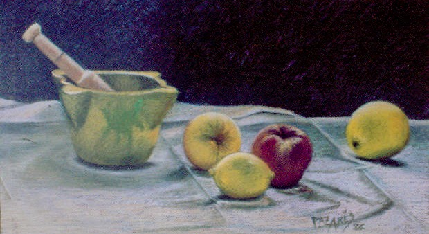

Still Life with Mortar and Fruits, created by the exceptional artist Paz Arés Osset in 1985, is a work that eloquently captures the essence of still life painting. This piece, rendered in pastel on paper, showcases a serene domestic scene with remarkable technical prowess and a deep sensitivity to the subtleties of everyday objects.
The composition of the piece is a masterclass in balance and harmony. The arrangement of the mortar and pestle, along with the carefully placed fruits – an apple, a lemon, and two peaches – creates a visual rhythm that guides the viewer's eye through the scene. The positioning of the objects on a simple cloth background adds to the overall tranquility and focus of the composition.
The color palette is both warm and inviting, with earthy tones dominating the scene. The rich yellows and reds of the fruits contrast beautifully with the muted green of the mortar, creating a vibrant yet cohesive visual experience. The subtle use of light enhances the textures and forms of the objects, highlighting their natural beauty and the artist's keen observational skills.
The texture and detail in this work are extraordinary. Each stroke of pastel is meticulously applied to capture the unique surfaces and tactile qualities of the different elements. The rough texture of the mortar, the smoothness of the fruits, and the soft folds of the cloth are all rendered with a precision that brings the scene to life.
Beyond its technical excellence, this still life carries a sense of nostalgia and quiet reflection. It invites the viewer to pause and appreciate the simple beauty of everyday items, encouraging a deeper connection with the world around us. The inclusion of the mortar and pestle suggests themes of culinary tradition and domesticity, adding a layer of cultural significance to the piece.
In summary, Still Life with Mortar and Fruits is a testament to Paz Arés Osset's innate talent and artistic vision. It is a piece that not only delights the eye but also stirs the soul, making it a worthy addition to any collection that values both aesthetic beauty and emotional depth.